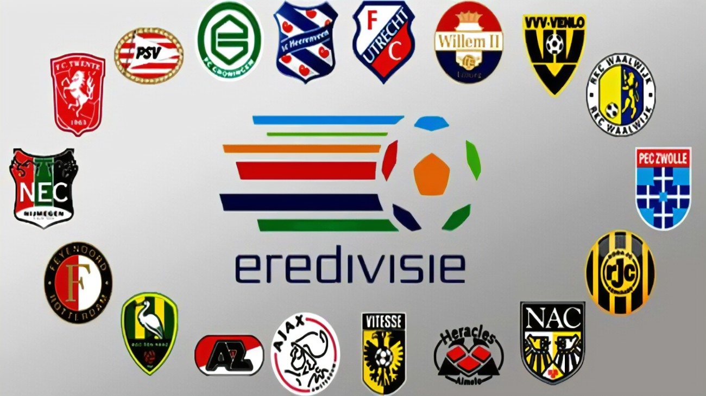

Momentos históricos en el fútbol mundial
- Maradona y la 'Mano de Dios' - Mundial 1986
- El gol de Iniesta en la final del Mundial 2010
- Zidane y el cabezazo en la final del Mundial 2006
- Brasil 1-7 Alemania en el Mundial 2014
- La 'Batalla de Santiago' - Mundial 1962
Las mejores ligas del mundo
Premier League

Conocida por su intensidad y competitividad.
LaLiga

Cuna de algunos de los mejores clubes y jugadores del mundo.
Bundesliga

Famosa por sus estadios llenos y la pasión de los aficionados.
Serie A

Historia rica y tácticas profundamente estratégicas.
Ligue 1

Reconocida por su talento joven y juego rápido.
Brasileirão

Una de las ligas más técnicas y competitivas de Sudamérica.
Eredivisie
Conocida por ser una fábrica de talentos futbolísticos.
Los 20 mejores goles de Messi y Cristiano Ronaldo
Sabías que Ningún de los 3 mejores jugadores del mundo no ha ganado un puskas
¿Qué opinas acerca de los futbolistas que han ganado el puskas?